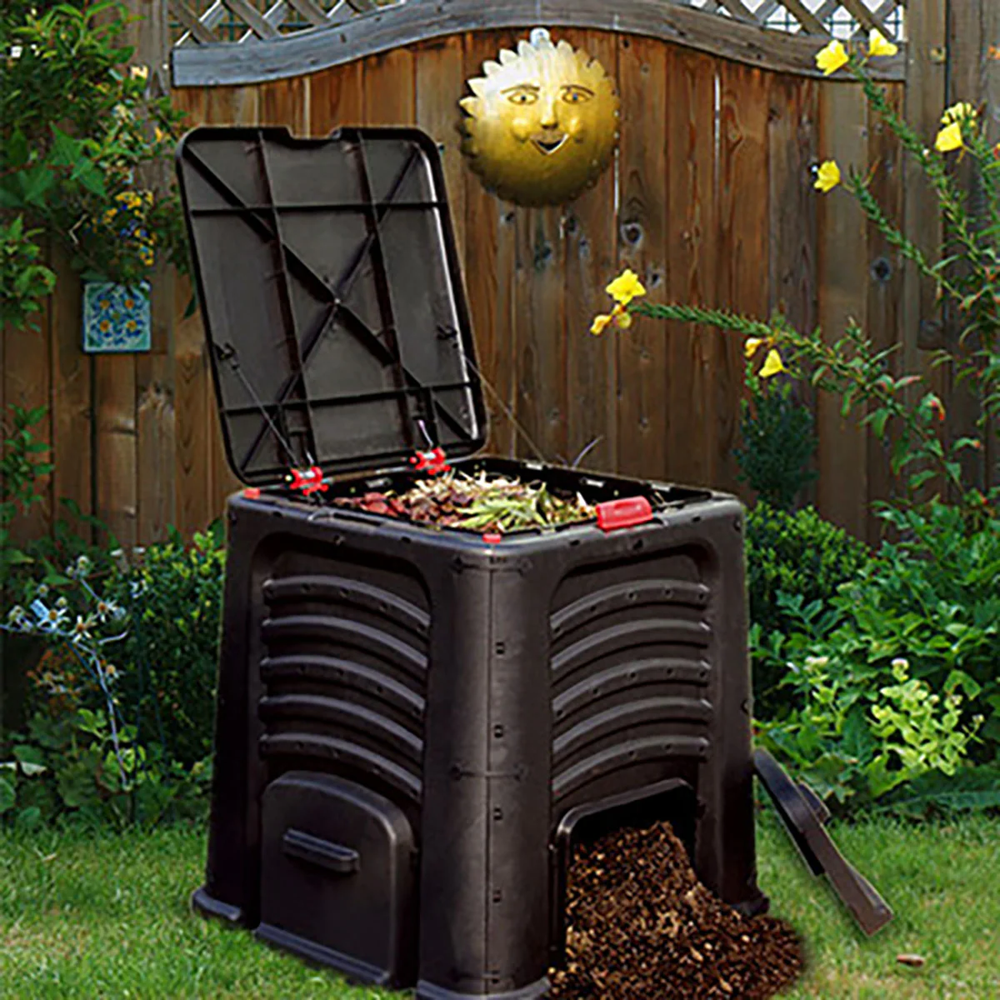

Viele Menschen werfen Lebensmittel weg, die noch genießbar sind. Das kann daran liegen, dass sie diese vergessen oder nicht wissen, wie man sie richtig lagert. Um Lebensmittelverschwendung zu verringern, können wir versuchen, unsere Mahlzeiten besser zu planen und nur das zu kaufen, was wir tatsächlich benötigen. Zudem können wir lernen, Lebensmittel sachgerecht zu lagern, damit sie länger haltbar bleiben. Darüber hinaus haben wir die Möglichkeit, überschüssige Lebensmittel an lokale Tafeln oder Notunterkünfte zu spenden.
Klicken Sie hier, um mehr zu erfahren
Wir können auch Lebensmittelreste kompostieren, anstatt sie wegzuschmeißen. Dies hilft, die Menge an Abfällen zu reduzieren, die auf Deponien gelangen, und liefert nährstoffreiche Erde für den Garten.
Klicken Sie hier, um mehr zu erfahren
Eine weitere Möglichkeit besteht darin, lokale Landwirte und Lebensmittelproduzenten zu unterstützen. Durch den Kauf von Lebensmitteln aus der Region lässt sich der CO2-Fußabdruck verringern, der durch den Transport über weite Strecken entsteht. Zudem stärkt die Unterstützung lokaler Landwirte die regionale Wirtschaft und fördert nachhaltige Anbaumethoden.
Klicken Sie hier, um mehr zu erfahren